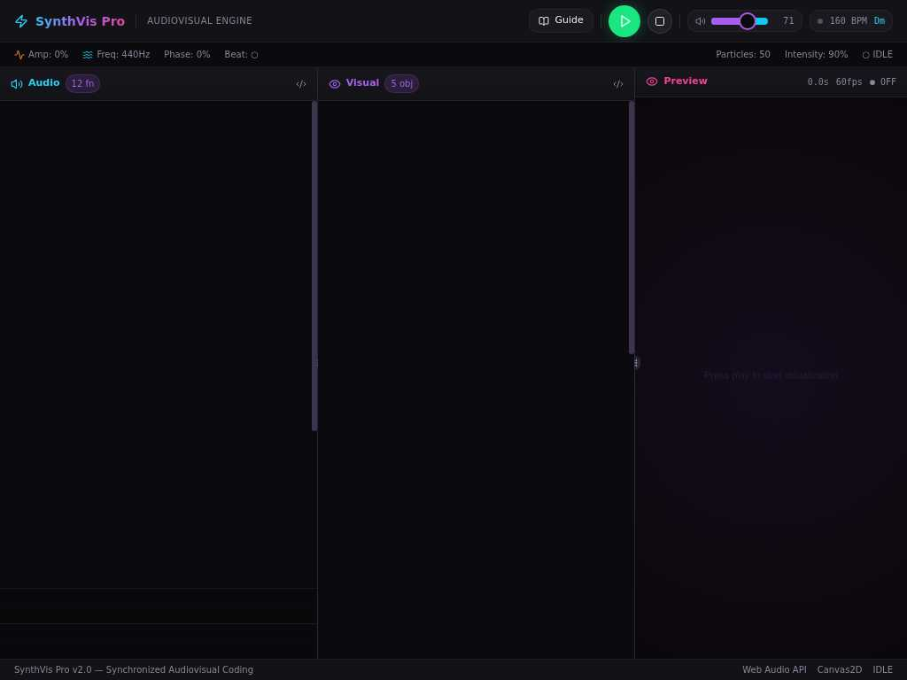

When Tab stays in the editor
Step 1 of 3
1. Start in the editor
Focus is in the Audio editor. The user presses Tab.

Evidence and accessibility guidance
This illustrates the saved Tab example, not a live editor, video, or complete exit-path test. Tab indentation is allowed when users can leave by keyboard and are told about any nonstandard exit method. W3C guidance.